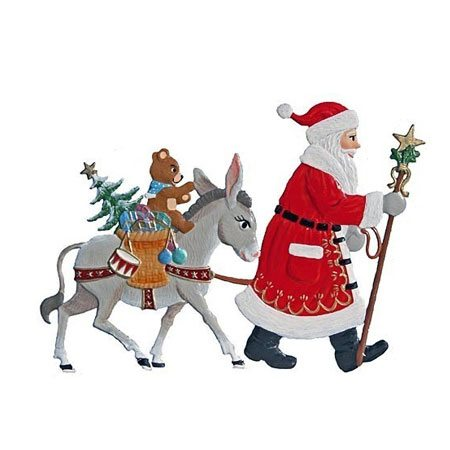

< Повернутися до вибору країни

Німеччина
В Німеччині Санта Клаус з'являється на віслючку. Перед сном діти ставлять на стіл тарілку для подарунків,які їм принесе Санта Клаус, а в черевики кладуть сіно - частування для віслючка.
В Німеччині під час новорічних свят обов'язковими є маскаради та феєрверки. Це пов'язано зі старими повір'ями, ніби таким чином відлякують злих духів.